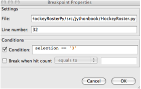

In this chapter, we will discuss developing Jython applications using two of the most popular integrated development environments, Eclipse and Netbeans. There are many other development environments available for Python and Jython today; however, these two are perhaps the most popular and contain the most Jython-specific tools. Eclipse has had a plug-in known as PyDev for a number of years, and this plug-in provides rich support for developing and maintaining Python and Jython applications alike. Netbeans began to include Python and Jython support with version 6.5 and later. The Netbeans IDE also provides rich support for development and maintenance of Python and Jython applications.
Please note that in this chapter we will refer to Python/Jython as Jython. All of the IDE options discussed are available for both Python and Jython unless otherwise noted. For readability and consistency sake, we’ll not refer to both Python and Jython throughout this chapter unless there is some feature that is not available for Python or Jython specifically. Also note that we will call the plug-ins discussed by their names, so in the case of Netbeans the plug-in is called Netbeans Python Plug-in. This plug-in works with both Python and Jython in all cases.
Naturally, you will need to have Eclipse installed on your machine to use Jython with it. The latest available version when this book is being written is Eclipse 3.5 (also known as Eclipse Galileo), and it is the recommended version to use to follow this section. Versions 3.2, 3.3, and 3.4 will work, too, although there will be minor user interface differences which may confuse you while following this section.
If you don’t have Eclipse installed on your machine, go to www.eclipse.org/downloads and download the version for Java developers.
Eclipse doesn’t include built-in Jython support. Thus, we will use PyDev, an excellent plug-in which adds support for the Python language and includes specialized support for Jython. PyDev’s home page is http://pydev.org, but you won’t need to manually download and install it.
To install the plug-in, start Eclipse and go to Help>Install new Software..., and type http://pydev.org/updates into the ‘Work with’ input box. Press Enter. After a short moment, you will see an entry for PyDev in the bigger box below. Just select it, clicking on the checkbox that appears at the left of PyDev (see Figure 11-1), and then click the Next button.
Figure 11-1. Installing PyDev
After this, just follow the wizard, read the license agreement, and, if you agree with the Eclipse Public License v1.0, accept it. Then click the Finish button.
Once the plug-in has been installed by Eclipse, you will be asked if you want to restart the IDE to enable the plug-in. As that is the recommended option, do so. Once Eclipse restarts itself, you will enjoy full Python support on the IDE.
Before starting a PyDev project you must tell PyDev which Python interpreters are available. In this context, an interpreter is just a particular installation of some implementation of Python. When starting you will normally only need one interpreter, and for this chapter we will only use Jython 2.5.1. To configure it, open the Eclipse Preferences dialog (via Windows>Preferences in the main menu bar). On the text box located at the top of the left panel (called ‘Filter text’), type ‘Jython.’ This will filter the myriad of Eclipse (and PyDev!) options and will present us with a much simplified view, in which you will spot the ‘Interpreter – Jython’ section on the left.
Once you have selected the ‘Interpreter – Jython’ section, you will be presented with an empty list of Jython interpreters at the top of the right side. We clearly need to fix that! So, click the New button, enter ‘Jython 2.5.1’ as the Interpreter Name, click Browse, and find jython.jar inside your Jython 2.5.1 installation.
Note
Even if this is the only runtime we will use in this chapter, we recommend you use a naming schema like the one proposed here, including both the implementation name (Jython) and the full version (2.5.1) on the interpreter name. This will avoid confusion and name clashing when adding new interpreters in the future.
After selecting the jython.jar file, PyDev will automatically detect the default, global sys.path entries. PyDev always infer the right values, so unless you have very special needs, just accept the default selection and click OK.
If all has gone well, you will now see an entry on the list of Jython interpreters, representing the information you just entered. It will be similar to Figure 11-2 (of course, your filesystem paths will differ).
Figure 11-2. List of Jython interpreters
That’s all. Click OK and you will be ready to develop with Jython while enjoying the support provided by a modern IDE.
If you are curious, you may want to explore the other options found on the Preferences window, below the PyDev section (after clearing the search filter we used to quickly go to the Jython interpreter configuration). But in our experience, it’s rarely needed to change most of the other options available.
In the next sections we will take a look to the more important PyDev features to have a more pleasant learning experience and make you more productive.
Once you see the first piece of example code on this chapter, it may seem overly simplistic. It is, indeed, a very dumb example. The point is to keep the focus on the basic steps you will perform for the lifecycle of any Python-based project inside the Eclipse IDE, which will apply to simple and complex projects. So, as you probably guessed, our first project will be a Hello World. Let’s start it!
Go to File>New >Project. You will be presented with a potentially long list of all the kinds of projects you can create with Eclipse. Select PyDev Project under the PyDev group (you can also use the filter text box at the top and type ‘PyDev Project’ if it’s faster for you).
The next dialog will ask you for your project properties. As the project name, we will use LearningPyDev. In the ‘Project contents’ field, check the ‘Use default’ checkbox, so PyDev will create a directory with the same name as the project inside the Eclipse workspace (which is the root path of your eclipse projects). Because we are using Jython 2.5.1, we will change the project type to Jython and the grammar version to 2.5. We will leave the Interpreter alone, which will default to the Jython interpreter we just defined on the Minimal Configuration section. We will also leave checked the ‘Create default ‘src’ folder and add it to the pythonpath’ option, because it’s a common convention on Eclipse projects.
After you click Finish, PyDev will create your project, which will only contain an empty src directory and a reference to the interpreter being used. Let’s create our program now.
Right-click on the project, and select New>PyDev Module. Leave the Package blank and enter ‘main’ in the Name field. PyDev offers some templates to speed up the creation of new modules, but we won’t use them, as our needs are rather humble. So leave the Template field empty and click Finish.
PyDev will present you an editor for the main.py file it just created. It’s time to implement our program. Write the following code in the editor:
Listing 11-1.
if __name__ == "__main__":
print "Hello PyDev!"
and then press Ctrl + F11 to run this program. Select Jython Run from the dialog presented and click OK. The program will run and the text ‘Hello PyDev!’ will appear on the console, located on the bottom area of the IDE.
Note
When describing the hotkeys (such as Ctrl + F11 for ‘Jython Run’), we’re using the PC keyboard convention. Mac users should press the Command key instead of Ctrl for all the hotkeys listed on this chapter, unless otherwise noted.
If you manually typed the program, you probably noted that the IDE knows that in Python a line ending in ‘:’ marks the start of a block and will automatically put your cursor at the appropriate level of indentation in the next line. See what happens if you manually override this decision and put the print statement at the same indentation level of the if statement and save the file. The IDE will highlight the line flagging the error. If you hover at the error mark, you will see the explanation of the error, as seen in Figure 11-3.
Figure 11-3. Error explanation appears when you hover over the error mark.
Expect the same kind of feedback for whatever syntax error you made. It helps to avoid the frustration of going on edit-run loops only to find further minor syntax errors.
Command line arguments may seem old fashioned, but they are actually a very simple and effective way to let programs interact with the outside. Because you have learned to use Jython as a scripting language, it won’t be uncommon to write scripts that will take their input from the command line (note that for unattended execution, reading input from the command line is way more convenient that obtaining data from the standard input, let alone using a GUI).
As you have probably guessed, we will make our toy program to take a command line argument. The argument will represent the name of the user to greet, to build a more personalized solution. Here is how our main.py should look:
Listing 11-2.
import sys
if __name__ == "__main__":
if len(sys.argv) < 2:
print "Sorry, I can't greet you if you don't say your name"
else:
print "Hello %s!" % sys.argv[1]
If you hit Ctrl + F11 again, you will see the ‘Sorry I can’t greet you...’ message on the console. It makes sense, because you didn’t pass the name. Not to say that it was your fault, as you didn’t have a chance to say your name.
To specify command line arguments, go to the Run>Run Configurations menu, and you will find an entry named ‘LearningPyDev main.py’ in the Jython Run section on the left. It will probably be already selected, but if it’s not, select it manually. Then, on the main section of the dialog, you will find ways to customize the execution of our script. You can change aspects such as the current directory, pass special argument to the JVM, change the interpreter to use, set environment variables, and so on. We just need to specify an argument, so let’s type ‘Bob’ in the ‘Program arguments’ box and click Run.
As you’d expect, the program now prints ‘Hello Bob!’ on the console. Note that the value you entered is remembered; that is, if you press Ctrl + F11 now, the program will print ‘Hello Bob!’ again. Some people may point out that this behavior makes testing this kind of program very awkward, because the Run Configurations dialog will have to be opened each time the arguments need to be changed. But if we really want to test our programs (which is a good idea), we should do it in the right way. We will look into that soon, but first let’s finish our tour on basic IDE features.
Let’s extend our example code a bit more, providing different ways to greet our users, in different languages. We will use the optparse module to process the arguments this time. Refer to Chapter 9 if you want to remember how to use optparse. We will also use decorators (seen in Chapter 4) to make it trivial to extend our program with new ways to greet our users. So, our little main.py has grown a bit now.
Listing 11-3.
# -*- coding: utf-8 -*-
import sys
from optparse import OptionParser
greetings = dict(en=u'Hello %s!',
es=u'Hola %s!',
fr=u'Bonjour %s!',
pt=u'Alò %s!')
uis = {}
def register_ui(ui_name):
def decorator(f):
uis[ui_name] = f
return f
return decorator
def message(ui, msg):
if ui in uis:
uis[ui](msg)
else:
raise ValueError("No greeter named %s" % ui)
def list_uis():
return uis.keys()
@register_ui('console')
def print_message(msg):
print msg
@register_ui('window')
def show_message_as_window(msg):
from javax.swing import JFrame, JLabel
frame = JFrame(msg,
defaultCloseOperation=JFrame.EXIT_ON_CLOSE,
size=(100, 100),
visible=True)
frame.contentPane.add(JLabel(msg))
if __name__ == "__main__":
parser = OptionParser()
parser.add_option('--ui', dest='ui', default='console',
help="Sets the UI to use to greet the user. One of: %s" %
", ".join("'%s'" % ui for ui in list_uis()))
parser.add_option('--lang', dest='lang', default='en',
help="Sets the language to use")
options, args = parser.parse_args(sys.argv)
if len(args) < 2:
print "Sorry, I can't greet you if you don't say your name"
sys.exit(1)
if options.lang not in greetings:
print "Sorry, I don't speak '%s'" % options.lang
sys.exit(1)
msg = greetings[options.lang] % args[1]
try:
message(options.ui, msg)
except ValueError, e:
print "Invalid UI name\n"
print "Valid UIs:\n\n" + "\n".join(' * ' + ui for ui in list_uis())
sys.exit(1)
Take a little time to play with this code in the editor. Try pressing Ctrl + Space (don’t change Ctrl with Command if you are using Mac OS X; this hotkey is the same on every platform), which is the shortcut for automatic code completion (also known as Intellisense in Microsoft’s parlance) on different locations. It will provide completion for import statements (try completing that line just after the import token, or in the middle of the OptionParser token) and attribute or method access (like on sys.exit or parser.add_option or even in JFrame.EXIT_ON_CLOSE which is accessing a Java class!) It also provides hints about the parameters in the case of methods.
In general, every time you type a dot, the automatic completion list will pop up, if the IDE knows enough about the symbol you just typed to provide help. But you can also call for help at any point. For example, go to the bottom of the code and type ‘message(.’ Suppose you just forgot the order of the parameters to that function. Solution: Press Ctrl + Space and PyDev will complete the statement, using the name of the formal parameters of the function.
Also try Ctrl + Space on keywords like ‘def.’ PyDev will provide you little templates that may save you some typing. You can customize the templates on the PyDev>Editor>Templates section of the Eclipse Preferences window (available on the Window>Preferences main menu).
The other thing you may have noted now that we have a more sizable program with some imports, functions, and global variables is that the Outline panel on the right side of the IDE window shows a tree-structure view of code being edited showing such features. It also displays classes, by the way.
And don’t forget to run the code! Of course, it’s not really spectacular to see that after pressing Ctrl + F11 we still get the same boring ‘Hello Bob!’ text on the console. But if you edit the command line argument (via the Run Configurations dialog) to the following: ‘Bob –lang es –ui window,’ you will get a nice window greeting Bob in Spanish. Also see what happens if you specify a non supported UI (say, –ui speech) or an unsupported language. We even support the –help! So we have a generic, polyglot greeter which also happens to be reasonably robust and user friendly (for command line program standards that is).
At this point you are probably tired of manually testing the program editing the command line argument on that dialog. Just one more section and we will see a better way to test our program using the IDE. Actually, part of the next section will help us move toward the solution.
Okay, it’s about time to explore our options to test our code, without resorting to the cumbersome manual black box testing we have been doing changing the command line argument and observing the output.
PyDev supports running PyUnit tests from the IDE, so we will write them. Let’s create a module named tests on the hello package with the following code:
Listing 11-8.
import unittest
import hello
class UIMock(object):
def __init__(self):
self.msgs = []
def __call__(self, msg):
self.msgs.append(msg)
class TestUIs(unittest.TestCase):
def setUp(self):
global hello
hello = reload(hello)
self.foo = UIMock()
self.bar = UIMock()
hello.register_ui('foo')(self.foo)
hello.register_ui('bar')(self.bar)
hello.message('foo', "message using the foo UI")
hello.message('foo', "another message using foo")
hello.message('bar', "message using the bar UI")
def testBarMessages(self):
self.assertEqual(["message using the bar UI"],
self.bar.msgs)
def testFooMessages(self):
self.assertEqual(["message using the foo UI",
"another message using foo"],
self.foo.msgs)
def testNonExistentUI(self):
self.assertRaises(hello.UINotSupportedExeption,
hello.message, 'non-existent-ui', 'msg')
def testListUIs(self):
uis = hello.list_uis()
self.assertEqual(2, len(uis))
self.assert_('foo' in uis)
self.assert_('bar' in uis)
As you can see, the test covers the functionality of the dispatching of messages to different UIs. A nice feature of PyDev is the automatic discovery of tests, so you don’t need to code anything else to run the previous tests. Just right-click on the src folder on the Package Explorer and select Run As>Jython unit-test. You will see the output of the test almost immediately on the console:
Listing 11-9.
Finding files...
['/home/lsoto/eclipse3.5/workspace-jythonbook/LearningPyDev/src/']
... done
Importing test modules ... done.
testBarMessages (hello.tests.TestUIs) ... ok
testFooMessages (hello.tests.TestUIs) ... ok
testListUIs (hello.tests.TestUIs) ... ok
testNonExistentUI (hello.tests.TestUIs) ... ok
----------------------------------------------------------------------
Ran 4 tests in 0.064s
OK
Python’s unittest is not the only testing option on the Python world. A convenient way to do tests which are more black-box-like than unit test, though equally automated is doctest.
Note
We will cover testing tools in much greater detail in Chapter 18, so take a look at that chapter if you feel too disoriented.
The nice thing about doctests is that they look like an interactive session with the interpreter, which makes them quite legible and easy to create. We will test our console module using a doctest.
First, click the right-most button on the console’s toolbar (you will recognize it as the one with a plus sign on its upper left-hand corner, which has the Open Console tip when you pass the mouse over it). From the menu, select PyDev Console. To the next dialog, answer Jython Console. After doing this you will get an interactive interpreter embedded on the IDE.
Let’s start exploring our own code using the interpreter:
Listing 11-10.
>>> from hello import console
>>> console.print_message("testing")
testing
We highly encourage you to type those two commands yourself. You will note how code completion also works on the interactive interpreter!
Back to the topic, we just interactively checked that our console module works as expected. The cool thing is that we can copy and paste this very snippet as a doctest that will serve to automatically check that the behavior we just tested will stay the same in the future.
Create a module named doctests inside the ‘hello’ package and paste those three lines from the interactive console, surrounding them by triple quotes (because they are not syntactically correct Python code after all). After adding a little of boilerplate to make this file executable, it will look like this:
Listing 11-11.
"""
>>> from hello import console
>>> console.print_message("testing")
testing
"""
if __name__ == "__main__":
import doctest
doctest.testmod(verbose=True)
After doing this, you can run this test via the Run>Jython run*menu* while doctests.py is the currently active file on the editor. If all goes well, you will get the following output:
Listing 11-12.
Trying:
from hello import console
Expecting nothing
ok
Trying:
console.print_message("testing")
Expecting:
testing
ok
1 items passed all tests:
2 tests in __main__
2 tests in 1 items.
2 passed and 0 failed.
Test passed.
After running the doctest you will notice that your interactive console has gone away, replaced by the output console showing the test results. To go back to the interactive console, look for the console button in the console tab toolbar, exactly at the left of the button you used to spawn the console. Then on the drop-down menu select the PyDev Console, as shown in Figure 11-4.
Figure 11-4. Selecting PyDev Console
As you can see, you can use the interactive console to play with your code, try ideas, and test them. And later a simple test can be made just by copying and pasting text from the same interactive console session. Of special interest is the fact that, because Jython code can access Java APIs quite easily, you can also test classes written with Java in this way.
Finally, we will show you how to integrate Java libraries into your project. We said some pages ago that we could add a ‘speech’ interface for our greeter. It doesn’t sound like a bad idea after all, because (like with almost any aspect) the Java world has good libraries to solve that problem.
We will use the FreeTTS library, which can be downloaded from http://freetts.sourceforge.net/docs/index.php. (You should download the binary version.)
After downloading FreeTTS, you will have to extract the archive on some place on your hard disk. Then, we will import a JAR file from FreeTTS into our PyDev project.
Right-click the project and select Import. Then choose General>File System and browse to the directory in which you expanded FreeTTS and select it. Finally, expand the directory on the left side panel and check the lib subdirectory. See Figure 11-5.
Figure 11-5. Adding Java libraries to the project
After clicking Finish, you will see that the files are now part of your project.
Tip
Alternatively, and depending on your operating system, the same operation can be performed copying the files or folders from the file manager and pasting it into the project (either via menu, keyboard shortcuts, or drag and drop).
Now, the files are part of the project, but we need to tell PyDev that lib/freetts.jar is a JAR file and should be added to the sys.path of our project environment. To do this, right-click on the project and select Properties. Then, on the left panel of the dialog, select PyDev - PYTHONPATH. Then click the ‘Add zip/jar/egg’ button and select the lib/freetts.jar file on the right side of the dialog that will appear. Click OK on both dialogs and you are ready to use this library from Python code.
The code for our new hello.speech module is as follows:
Listing 11-13.
from com.sun.speech.freetts import VoiceManager
from hello import register_ui
@register_ui('speech')
def speech_message(msg):
voice = VoiceManager().getVoice("kevin16")
voice.allocate()
voice.speak(msg)
voice.deallocate()
If you play with the code on the editor you will notice that PyDev also provides completion for imports statement referencing the Java library we are using.
Finally, we will change the second line of main.py from:
Listing 11-14.
import hello, hello.console, hello.window
to
import hello, hello.console, hello.window, hello.speech
in order to load the speech UI too. Feel free to power on the speakers and use the –ui speech option to let the computer greet yourself and your friends!
There you go, our humble greeter has finally evolved into a quite interesting, portable program with speech synthesis abilities. It’s still a toy, but one which shows how quickly you can move with the power of Jython, the diversity of Java, and the help of an IDE.
PyDev also offers full debugging capabilities for your Jython code. To try it just put some breakpoints in your code by double-clicking on the left margin of the editor, and then start your program using the F11 shortcut instead of Ctrl + F11.
Once the debugger hits your breakpoint, the IDE will ask you to change its perspective. This means it will change to a different layout, better suited for debugging activities. Answer Yes and you will find yourself on the debugging perspective, shown in Figure 11-6.
Figure 11-6. Debugging perspective
The perspective offers the typical elements of a debugger. In the upper left area in the contents of the ‘Debug’ tab we have the call stack for each running thread. Click on an item of the call to navigate to the particular line of code which made the corresponding call. The call stack view also has influence over what is shown by the Variables panel on the upper right-hand area, which lists all the current local and global variables. You can ‘drill down’ on every non-primitive value to see its components, as a tree. By default the variables shown are from the point of view of the code being currently executed. But if we select a different element on the call stack in the left area it will show the variables for the line of code associated with that particular stack frame.
Also in the same upper right-hand area there is the Breakpoints tab, which is quite useful for taking a global look at all the breakpoints defined. Clicking on the breakpoint entry will navigate the code editor to the associated line of code, of course. And you can disable, enable, and remove breakpoints by right-clicking on the entries.
The rest of the elements are already known: the central area is filled by the main editor (using less space this time to make room for the extra tools) and its outline, while the output console takes the lower area.
Once you reach a breakpoint you can control the execution, by using Step Into (F5) to go into the code of the next function call, Step Over (F6) to run the current line and stop again, Step Return (F7) to execute the remaining code of the current function, and Resume Execution (F8) to let the program continue running until the next breakpoint is reached (or the program finishes).
Once you finish your debugging session, you can go back to the normal editing perspective by selecting PyDev on the upper right-hand area of the main IDE Window (which will have the Debug button pushed while staying in the debugging perspective).
PyDev is a very mature plug-in for the Eclipse platform, which can be an important element in your toolbox. Automatic completion and suggestions help a lot when learning new APIs (both Python APIs and Java APIs!) especially if paired with the interactive console. It is also a good way to introduce a whole team into Jython or into a specific Jython project, because the project-level configuration can be shared via normal source control systems. Not to mention that programmers coming from the Java world will find themselves much more comfortable on a familiar environment.
To us, IDEs are a useful part of our toolbox, and tend to shine on big codebases and/or complex code which we may not completely understand yet. Powerful navigation and refactoring abilities are key to the process of understanding such projects and are features that should only improve in the future. Even if the refactoring capabilities are not still as complete as the state of the art on Java IDEs, we encourage you to try them on PyDev: ‘Extract local variable,’ ‘Inline local variable,’ and ‘Extract method’ are quite useful. Even if the alternative of doing the refactor manually isn’t as painful with Python as with Java (or any other statically typed language without type inference), when the IDE can do the right thing for you and avoid some mechanical work, you will be more productive.
Finally, the debugging capabilities of PyDev are superb and will end your days of using print as a poor man’s debugger (seriously, we did that for a while!) Even more advanced Python users who master the art of import pdb; pdb.set_trace() should give it a try.
Now, PyDev isn’t the only IDE available for Jython. If you are already using the Netbeans IDE or didn’t like Eclipse or PyDev for some reason, take a look at the rest of this chapter, in which we will cover the Netbeans plug-in for Python development.
The Netbeans integrated development environment has been serving the Java community well for over ten years now. During that time, the tool has matured quite a bit from what began as an ordinary Java development tool into what is today an advanced development and testing environment for Java and other languages alike. As Java and JavaEE application development still remain an integral part of the tool, other languages such as JRuby, Python, Groovy, and Scala have earned themselves a niche in the tool as well. Most of these languages are supported as plug-ins to the core development environment, which is what makes Netbeans such an easy IDE to extend, as it is very easy to build additional features to distribute. The Python support within Netbeans began as a small plug-in known as nbPython, but it has grown into a fully featured Python development environment and it continues to grow.
The Netbeans Python support provides developers with all of the expected IDE features, such as code completion, color-coding, and easy runtime development. It also includes some nice advanced features for debugging applications and the like.
The first step for installing the Netbeans Python development environment is to download the current release of the Netbeans IDE. At the time of this writing, Netbeans 6.7.1 is the most recent release, but 6.8 is right around the corner. You can find the IDE download by going to the web site www.netbeans.org and clicking on the download link. Once you do so, you’ll be presented with plenty of different download options. These are variations of the IDE that are focused on providing different features for developers depending upon what they will use the most. Nobody wants a bulky, memory-hungry development tool that will overhaul a computer to the extreme. By providing several different configurations of the IDE, Netbeans gives you the option to leave off the extras and only install those pieces that are essential to your development. The different flavors for the IDE include Java SE, Java, Ruby, C/C++, PHP, and All. For those developers only interested in developing core Java applications, the Java SE download would suffice. Likewise, someone interested in any of the other languages could download the IDE configuration specific to that language. For the purposes of this book and in our everyday development, we use the All option, because as we enjoy having all of the options available. However, there are options available for adding features if you download only the Java SE or another low-profile build and wish to add more later.
At the time of this writing, there is also a link near the top of the downloads page for PythonEA distribution. If that link or a similar Python Netbeans distribution link is available, then you can use it to download and install just the Jython-specific features of the Netbeans IDE. We definitely do not recommend taking this approach unless you plan to purely code Python applications alone. It seems to us that a large population of the Jython developer community also codes some Java, and may even integrate Java and Jython within their applications. If this is the case, you will want to have the Java-specific features of Netbeans available as well. That is why we do not recommend the Python-only distribution for Jython developers, but the choice is there for you to make.
Now that you’ve obtained the IDE, it is important to take a look at the license. Python support for Netbeans is licensed under CDDL version 1.0, so it may be a good idea to take a look at that as well. It is easy to install in any environment using the intuitive Netbeans installer. Perhaps the most daunting task when using a new IDE is configuring it for your needs. This should not be the case with Netbeans though because the configuration for Java and Python alike are quite simple. For instance, if you working with the fully-featured installation, you will already have application servers available for use as Netbeans installs Glassfish by default. Note that it is a smart idea to change that admin password very soon after installation in order to avoid any potentially embarrassing security issues.
When the IDE initially opens up, you are presented with a main window that includes links to blogs and articles pertaining to Netbeans features. You also have the standard menu items available such as File, Edit, Tools, and so on. In this chapter we will specifically cover the configuration and use of the Jython features; however, there are very useful tutorials available online and in book format for covering other Netbeans features. One thing you should note at this point is that with the initial installation, Python/Jython development tools are not yet installed unless you chose to install the PythonEA distribution. Assuming that you have installed the full Netbeans distribution, you will need to add the Python plug-in via the Netbeans plug-in center. You will need to go to the Tools menu and then open the Plug-ins submenu. From there, you should choose the Available Plug-ins tab and sort by category. Select all of the plug-ins in the Python category and then install. This option will install the Python plug-in as well as a distribution of Jython. You will need to follow on-screen directions to complete the installation.
Once the plug-in has been successfully installed then it is time to configure your Python and Jython homes. To do so, go to the Tools menu and then open the Python Platforms menu as this will open the platform manager for Python/Jython. At the time of this writing, the default Jython version that was installed with the Python plug-in was 2.5+. You most likely have your own Jython installation by now that includes additional packages that you may wish to use. As this is the case, go ahead and add your Jython installation as a platform option and make it the default (see Figure 11-7).
Figure 11-7. Adding your Jython installation as a platform option and making it the default
To do so, click on the New button underneath the platform listing. You can try to select the Auto Detect option, but we did not have luck with Netbeans finding our Jython installation using it. If you choose the New button, then you will be presented with a file chooser window. You should choose the Jython executable that resides in the area <JYTHON_HOME>/bin and all of the other necessary fields will auto-populate with the correct values. Once completed, choose the Close button near the bottom of the Python Platform Manager window. You are now ready to start programming with Python and Jython in Netbeans.
If you enter the Netbeans preferences window you will find some more advanced options for customizing your Python plug-in. If you go to the Editor tab, you can set up Python specific options for formatting, code templates, and hints. In doing so, you can completely customize the way that Netbeans displays code and offers assistance when working with Jython. You can also choose to set up different fonts and coloring for Python code by selecting the Fonts and Colors tab. This is one example of just how customizable Netbeans really is because you can set up different fonts and colors for each language type.
If you choose the Miscellaneous tab you can add different file types to the Netbeans IDE and associate them with different IDE features. If you look through the pull-down menu of files, you can see that files with the extension of py**or pyc are associated as Python files. This ensures that files with the associated extensions will make use of their designated Netbeans features. For instance, if we wanted to designate**a different extension on some Jython-related files*,* we could easily do so and associate this extension with Python files in Netbeans. Of course, we do not recommend doing so, as Jython will not import files with unknown extensions! Once we’ve made this association then we can create files with an extension of that we’ve added and use them within Netbeans just as if they were Python files. Lastly, you can alter a few basic options such as enabling prompting for python program arguments, and changing debugger port and shell colors from the Python tab in Netbeans preferences.
As stated previously in the chapter, there are a number of options when using the Netbeans Python solution. There are a few different selections that can be made when creating a new Python project. You can either choose to create a Python Project*or*Python Project with Existing Sources. These two project types are named quite appropriately, as a Python Project will create an empty project; once created it is easy to develop and maintain applications and scripts alike. Moreover, you can debug your application via the Python debugger as derived from Jean-Yves Mengant’s jpydbg debugger, and have Netbeans create tests if you choose to do so. One of the first nice features you will notice right away is the syntax coloring in the editor.
In this section, we will discuss how to develop a standalone Jython application within Netbeans. We will use a variation of the standard HockeyRoster application that we have used in other places throughout the book. Overall, the development of a stand-alone Jython application in Netbeans differs very little from a stand-alone Java application. The main difference is that you will have different project properties and other options available that pertain to creating Jython projects. And obviously you will be developing in Jython source files along with all of the color-coding and code completion, and other options that the Python plug-in has to offer.
To get started, go ahead and create a new Python Project by using the File menu or the shortcut in the Netbeans toolbar. For the purposes of this section, name the new project HockeyRoster. Uncheck the option to Create Main File, as we will do this manually. Once your project has been created, explore some of the options you have available by right-clicking (Ctrl-click) on the project name. The resulting menu should allow you the option to create new files, run, debug, or test your application, build eggs, work with code coverage, and more. At this point you can also change the view of your Python packages within Netbeans by choosing the ‘View Python Packages as’ option. This will allow you the option to either see the application in list or tree mode, your preference. You can search through your code using the Find option, share it on Kenai with the integrated Netbeans Kenai support, look at the local file history, or use your code with a version control system.
Note
In case you are not familiar with project Kenai, it is an online service started by Sun Microsystems for hosting open source projects and code. For more information, go to www.kenai.com and check it out.
Click on the Properties option and the Project Properties window should appear. From within the Project Properties window, there are options listed on the left-hand side including Source*,*Python*,*Run*,*and Formatting. The Source option provides the ability to change source location or add new source locations to your project. The Test Root Folders section within this option allows you to add a location where Python tests reside so that you can use them with your project. The Python option allows you to change your Python platform and add locations, JARs, and files to your Python path. Changing your Python platform provides a handy ability to test your program on Jython and Python alike, if you want to ensure that your code works on each platform. The Run option provides the ability to add or change the Main module, and add application arguments. Lastly, the Formatting option allows you to specify different formatting options in Netbeans for this particular project. This is great, because each different project can have different colored text, and so on, depending upon the options chosen.
At this point, create the Main module for the HockeyRoster application. Go to File>New and right-clicking (Cntrl-click) on the project, or use the toolbar icon. From here you can either create an Executable Module, Module, Empty Module, Python Package, or Unit Test. Choose to create an Executable Module and name the main file HockeyRoster.py*,* and keep in mind that when we created the project we had the ability to have the IDE generate this file for us but we chose to decline. Personally, we like to organize our projects using the Python packaging system. Create some packages now using the same process that you used to create a file and name the package jythonbook. Once created, drag your HockeyRoster.py module into the jythonbook package to move it into place. Note that you can also create several packages at the same time by naming a package like jythonbook.features or something of the like*,*which will create both of the resulting packages.
The HockeyRoster**main module will be the implementation module for our application, but we still need somewhere to store each of the player’s information. For this, we will create a module named Player. Go ahead and create an Empty Module named Player within the same jythonbook package. Now we will code the Player class for our project. To do so, erase the code that was auto-generated by Netbeans in the Player.py module and type the following. Note that you can change the default code that is created when generating a new file by changing the template for Python applications.
Listing 11-15.
# Player.py
# Container to hold player information
class Player:
def __init__(self, id, first, last, position):
self.id = id
self.first = first
self.last = last
self.position = position
def add_assist(self):
self.assists = assists + 1
The first thing to note is that Netbeans will maintain your indentation level. It is also easy to decrease the indentation level by using the SHIFT + TAB keyboard shortcut. Using the default environment settings, the keywords should be in a different color (blue by default) than the other code. Method names will be in bold, and references to self or variables will be in a different color as well. You should notice some code completion, mainly the automatic self placement after you type a method name and then the right parentheses. Other subtle code completion features also help to make our development lives easier. If you make an error, indentation or otherwise, you will see a red underline near the error, and a red error badge on the line number within the left-hand side of the editor. Netbeans will offer you some assistance in determining the cause of the error if you hover your mouse over the red error badge or underline.
Now that we have coded the first class in our stand-alone Jython application, it is time to take a look at the implementation code. The HockeyRoster.py module is the heart of our roster application, as it controls what is done with the team. We will use the shelve technique to store our Player objects to disk for the roster application. As you can see from the following code, this is a very basic application and is much the same as the implementation that will be found in the next chapter using Hibernate persistence.
Listing 11-16.
# HockeyRoster.py
#
# Implementation logic for the HockeyRoster application
# Import Player class from the Player module
from Player import Player
# Import shelve for storage to disk
import shelve
class HockeyRoster:
def __init__(self):
self.player_data = shelve.open("players")
def make_selection(self):
'''
Creates a selector for our application. The function prints output to the
command line. It then takes a parameter as keyboard input at the command
line in order to choose our application option.
'''
options_dict = {1:self.add_player,
2:self.print_roster,
3:self.search_roster,
4:self.remove_player}
print "Please chose an option\\n"
selection = raw_input('''Press 1 to add a player, 2 to print the roster,
3 to search for a player on the team,
4 to remove player, 5 to quit: ''')
if int(selection) not in options_dict:
if int(selection) == 5:
print "Thanks for using the HockeyRoster application."
else:
print "Not a valid option, please try again\\n"
self.make_selection()
else:
func = options_dict[int(selection)]
if func:
func()
else:
print "Thanks for using the HockeyRoster application."
def add_player(self):
'''
Accepts keyboard input to add a player object to the roster list.
This function creates a new player object each time it is invoked
and appends it to the list.
'''
add_new = 'Y'
print "Add a player to the roster by providing the following information\\n"
while add_new.upper() == 'Y':
first = raw_input("First Name: ")
last = raw_input("Last Name: ")
position = raw_input("Position: ")
id = self.return_player_count() + 1
print id
#set player and shelve
player = Player(id, first, last, position)
self.player_data[str(id)] = player
print "Player successfully added to the roster\\n"
add_new = raw_input("Add another? (Y or N)")
self.make_selection()
def print_roster(self):
'''
Prints the contents of the list to the command line as a report
'''
print "====================\\n"
print "Complete Team Roster\\n"
print "======================\\n\\n"
player_list = self.return_player_list()
for player in player_list:
print "%s %s - %s" % (player_list[player].first,
player_list[player].last, player_list[player].position)
print "\\n"
print "=== End of Roster ===\\n"
self.make_selection()
def search_roster(self):
'''
Takes input from the command line for a player's name to search within the
roster list. If the player is found in the list then an affirmative message
is printed. If not found, then a negative message is printed.
'''
index = 0
found = False
print "Enter a player name below to search the team\\n"
first = raw_input("First Name: ")
last = raw_input("Last Name: ")
position = None
player_list = self.return_player_list()
for player_key in player_list:
player = player_list[player_key]
if player.first.upper() == first.upper() and \\
player.last.upper() == last.upper():
position = player.position
if position:
print '%s %s is in the roster as %s' % (first, last, position)
else:
print '%s %s is not in the roster.' % (first, last)
self.make_selection()
def remove_player(self):
'''
Removes a player from the list
'''
index = 0
found = False
print "Enter a player name below to remove them from the team roster\\n"
first = raw_input("First Name: ")
last = raw_input("Last Name: ")
position = None
player_list = self.return_player_list()
found_player = None
for player_key in player_list:
player = player_list[player_key]
if player.first.upper() == first.upper() and \\
player.last.upper() == last.upper():
found_player = player
break
if found_player:
print '''%s %s is in the roster as %s,
are you sure you wish to remove?''' % (found_player.first,
found_player.last,
found_player.position)
yesno = raw_input("Y or N")
if yesno.upper() == 'Y':
# remove player from shelve
print 'The player has been removed from the roster',
found_player.id
del(self.player_data[str(found_player.id)])
else:
print 'The player will not be removed'
else:
print '%s %s is not in the roster.' % (first, last)
self.make_selection()
def return_player_list(self):
return self.player_data
def return_player_count(self):
return len(self.player_data)
# main
#
# This is the application entry point. It simply prints the applicaion title
# to the command line and then invokes the makeSelection() function.
if __name__ == "__main__":
print "Hockey Roster Application\\n\\n"
hockey = HockeyRoster()
hockey.make_selection()
The code should be relatively easy to follow at this point in the book. The main function initiates the process as expected, and as you see it either creates or obtains a reference to the shelve or dictionary where the roster is stored. Once this occurs the processing is forwarded to the make_selection() function that drives the program. The important thing to note here is that, when using Netbeans, the code is laid out nicely, and that code completion will assist with imports and completion of various code blocks. To run your program, you can either right-click (Ctrl+click) on the project or set the project as the main project within Netbeans and use the toolbar or pull-down menus. If everything has been set up correctly, you should see the program output displaying in the Netbeans output window. You can interact with the output window just as you would with the terminal.
Rather than repeat the different ways in which Jython and Java can be intermixed within an application, this section will focus on how to do so from within the Netbeans IDE. There are various approaches that can be taken in order to perform integration, and this section will not cover all of them. However, the goal is to provide you with some guidelines and examples to use when developing integrated Jython and Java applications within Netbeans.
Making use of Java from within a Jython application is all about importing and ensuring that you have the necessary Java class files and/or JAR files in your classpath. In order to achieve this technique successfully, you can easily ensure that all of the necessary files will be recognized by the Netbeans project. Therefore, the focus of this section is on using the Python project properties to set up the sys.path for your project. To follow along, go ahead and use your HockeyRoster Jython project that was created earlier in this section.
Let’s say that we wish to add some features to the project that are implemented in a Java project named HockeyIntegration that we are coding in Netbeans. Furthermore, let’s assume that the HockeyIntegration Java project compiles into a JAR file. Let’s set up the HockeyIntegration project by choosing New>Project. When the New Project window appears, select Java as the category, and Java Application as the project and click Next. Now make sure you name your application HockeyIntegration and click Finish. See Figure 11-8.
Your java application is now created and you are ready to begin development. In order to use this project from within our HockeyRoster project, you’ll need to open up the project properties by right-clicking on your Jython project and choosing the Properties option. Once the window is open, click on the Python menu item on the left-hand side of the window. This will give you access to the sys.path so you can add other Python modules, eggs, Java classes, JAR files, and so on. Click on the Add button and then traverse to the project directory for the Java application you are developing. Once there, go to the dist directory and select the resulting JAR file and click OK. You can now use any of the Java project’s features from within your Jython application.
Figure 11-8.
If you are interested in utilizing a Java API that exists within the standard Java library, then you are in great shape. As you should know by now, Jython automatically provides access to the entire Java standard library. You merely import the Java classes that you wish to use within your Jython application and begin using, nothing special to set up within Netbeans. At the time of this writing, the Netbeans Python EA did not support import completion for the standard Java library. However, we suspect that this feature will be added in a subsequent release.
If you are interested in using Jython or Python modules from within your Java applications, Netbeans makes it easy to do. As mentioned in Chapter 10, the most common method of utilizing Jython from Java is to use the object factory pattern. However, there are other ways to do this, such as using the clamp project, which is not yet production-ready at the time of writing. For the purposes of this section, we’ll discuss how to utilize another Netbeans Jython project as well as other Jython modules from within your Java application using the object factory pattern.
In order to effectively demonstrate the use of the object factory pattern from within Netbeans, we’ll be making use of the PlyJy project, which provides object factory implementations that can be used out of the box. If you haven’t done so already, go to the Project Kenai site find the PlyJy project and download the provided JAR. We will use the Netbeans project properties window in our Java project to add this JAR file to our project. Doing so will effectively diminish the requirement of coding any object factory implementations by hand and we’ll be able to directly utilize Jython classes in our project.
Create a Java project named ObjectFactoryExample by selecting New>Project>Java Application. Once you’ve done so, right-click (Cntrl+click) on the project and choose Properties. Once the project properties window appears, click the Libraries option on the left-hand side. From there, add the PlyJy JAR file that you previously downloaded to your project classpath. You will also have to add the jython.jar file for the appropriate version of Jython that you wish to use. In our case, we will utilize the Jython 2.5.1 release. See Figure 11-9.
Figure 11-9. Adding the JAR file
The next step is to ensure that any and all Jython modules that you wish to use are in your CLASSPATH somewhere. This can be easily done by either adding them to your application as regular code modules somewhere and then going into the project properties window and including that directory in the Compile-Time Libraries list contained the Libraries section, or by clicking the Add JAR/Folder button. Although this step may seem unnecessary because the modules are already part of your project, it must be done in order to place them into your CLASSPATH. Once they’ve been added to the CLASSPATH successfully, you can begin to make use of them via the object factory pattern. Netbeans will seamlessly use the modules in your application as if all of the code was written in the same language. At this point your project should be set up and ready for using object factories. To learn more about using object factories, please refer to Chapter 10.
As mentioned previously, the Netbeans IDE also includes a Python debugger that is derived from Jean-Yves Mengant’s jpydbg debugger. This section will discuss how to make use of the Netbeans Python debugger along with some examples using our HockeyRoster code that was written in the previous section. If you have used a debugger in another IDE, or perhaps the Java debugger that is available for Netbeans, this debugger will feel quite familiar. The Python debugger includes many features such as breakpoints, run-time local variable values, code stepping, and more.
Prior to using the debugger, it may be useful to take a look at the debugger preferences by navigating to the Netbeans Preferences>Python Options>Debugger window. From there you will see that you have the ability to change the debugger port, code coloring for debugging sessions, and to stop at the first line of the script or continue until the debugger reaches the first breakpoint. To make the debugger feel and act similar to the Netbeans Java debugger, you may want to de-select the ‘Stop at the first line’ checkbox. Otherwise the debugger will not load your module right away, but rather stop execution at the first line of your module and wait for you to continue. See Figure 11-10.
Figure 11-10. The Netbeans Python debugger
Making use of the Python debugger included with Netbeans is much like working from the Jython interactive interpreter from the command-line or terminal window. If you have selected the ‘Stop at first line’ checkbox in the debugger preferences, the debugger will halt at the first line of code in your main module and you must use the debugger Continue button to move to the first line of code that is executed. However, if you have de-selected the checkbox, then the module will automatically run your program until it reaches the first breakpoint. For the purposes of this exercise, let’s keep the checkbox selected. In order to set a breakpoint, click on the margin to the left of the line in your code where you would like the debugger to halt program execution. In our case, let’s open the HockeyRoster.py module and set a breakpoint in the code as shown in Figure 11-11.
Figure 11-11. Setting a breakpoint in the code
Now that we’ve set a breakpoint, we need to start our debugger. However, prior to debugging it is important to make sure that Netbeans knows which module to use for starting the program. To do so, right-click on your project and select Properties. When the properties window opens, select Run in the left-hand side of the window. You should now type or browse to the module that you wish to use as a starting point for your program. See Figure 11-12.
Figure 11-12. Click Browse to select the module you wish to use as a starting point.
Note that this may already be automatically filled in for you by Netbeans. Once you’ve ensured that you have set the main module, you can begin the debugging session. To do so, you can either select your program and use the Debug menu option, or you can right-click on the project and select Debug. Once you’ve started the debugger, you will see a series of messages appearing in the debugging window near the bottom of the IDE window to indicate that the debugger has been started. After a few seconds, you will see the messages stop writing in the debugger output window, and the editor will focus on the first line of code in your main module and highlight it in green. See Figure 11-13.
Figure 11-13. Beginning the debugging session
To continue the debugger to the first line of code that is executed, select the green Continue button in the toolbar, or press the F5 key. You should see the program will begin to execute within the debugger output window and it will halt to allow us to enter a selection. See Figure 11-14.
Figure 11-14. The debugger output window
Make sure your cursor is within the debugger output window and enter 1 to add a player. When you hit the Enter button to continue, the program will not continue to execute, but instead it will halt at the breakpoint that we have set up. In the editor you will see the line which we added a breakpoint to is now highlighted in green. The debugger has suspended state at this point in the program, and this affords us the ability to perform tasks to see exactly what is occurring at this point in the program. For instance, if you select the Variables tab in the lower portion of the Netbeans IDE, you will be able to see the values of all local variables at this current point in the program. See Figure 11-15.
Figure 11-15. The values of all local variables at this current point in the program
You can also select the Call Stack tab to see the execution order of your program to this point. See Figure 11-16.
Figure 11-16. The execution order of your program
Once you’ve evaluated the program at the breakpoint, you can continue the program execution by stepping forward through the code using the buttons in the toolbar. You can also click the Continue button to run the program until it reaches the next breakpoint, or in this case because we have no more breakpoints, it will just continue the program execution as normal. The debugger is especially helpful if you are attempting to evaluate a specific line of code or portion of your program by stepping through the code and executing it line by line.
Another nice feature of the debugger is that you can set certain conditions on breakpoints. To do so, set a breakpoint in your code and then right-click on the breakpoint and select Breakpoint and then Properties from the resulting window. At this point you will see the additional breakpoint options. In this case, set up a condition that will cause the debugger to halt only if the selection variable is equal to 3, as shown in Figure 11-17.
Figure 11-17. Setting a condition for halting the debugger
At this point you can run the debugger again, and if you select the option of 3 during your program execution you will notice that the debugger will halt.
The Netbeans Python debugger offers enough options to fill up an entire chapter worth of reading, but hopefully the content covered in this section will help you get started. Once you’ve mastered the use of the debugger, it can save you lots of time.
There are a number of additional features in the Netbeans Python IDE support that we haven’t touched upon yet. For instance, minimal refactoring support is available for any Python module. By right-clicking on the module in the project navigator or within a module, a bevy of additional options become available to you via the right-click menu. You’ll see that there is a Refactoring option that becomes available. However at the time of this writing the only available refactoring options were Rename, Move, Copy, and Safely Delete. There is a Navigate feature that allows for one to perform shortcuts such as highlighting a variable and finding its declaration. The Navigate feature also allows you to jump to any line in your code by simply providing a line number. If your Python class is inheriting from some other object, you can use the Navigate feature to quickly go to the super implementation. It is easy to find the usages of any Python module, method, function, or variable by using the Find Usages feature. If your code is not formatted correctly, you can quickly have the IDE format it for you by choosing the Format option, which is also available in the right-click menu.
Another nice feature that is available in the right-click menu is Insert Code. This feature allows you to choose from a number of different templates in order to have the IDE auto-generate code for you. Once you select the Insert Code option, another menu appears allowing you to choose from a code templates including Property, Constructor, Method, and Class. Once a template is chosen, the IDE auto-generates the code to create a generic Python property, constructor, method, or class. You can then refine the automatically generated code to your needs. This feature allows the developer to type less, and if used widely throughout a program it can ensure that code is written in a consistent manner. See Figure 11-18.
Figure 11-18. The very handy Insert Code option
Another nice feature is Fast Import. This allows you to highlight an object in your code and automatically have the IDE import the required module for using the object. You also have the ability to Fix Imports, which will automatically clean up unused imports in your code.
Along with all of the other features that are available with the Netbeans IDE, these additional features are like the icing on the cake! Keep in mind that you are not required to right-click each time that you wish to use one of these additional features, there are also keyboard shortcuts for each of them. The keyboard shortcuts will differ depending upon which operating system you are using.
As with most other programming languages, you have several options to use for an IDE when developing Jython. In this chapter we covered two of the most widely used IDE options for developing Jython applications, Netbeans and Eclipse. Eclipse offers a truly complete IDE solution for developing Jython applications, both stand alone and web-based. PyDev is under constant development and always getting better, adding new features and streamlining existing features.
Netbeans Jython support is in still in development at the time of this writing. Many of the main features such as code completion and syntax coloring are already in place. It is possible to develop Jython applications including Jython and Java integration as well as web-based applications. In the future, Netbeans Jython support will develop to include many more features and they will surely be covered in future releases of this book.
In the next chapter, we will take a look at developing some applications utilizing databases. The zxJDBC API will be covered and you’ll learn how to develop Jython applications utilizing standard database transactions. Object relational mapping is also available for Jython in various forms, we’ll discuss many of those options as well.